飾品工藝
能量與美學的交織
源自自然的靈感，融合匠心工藝。澄春稻風格飾品嚴選天然珠寶與高級材料，延續春稻品牌的質樸美學，細緻打造每一件飾品。
無論是一抹溫潤的光澤，或是一絲純粹的線條設計，皆傳遞著自然與心意的和諧共鳴。佩戴的不只是飾品，更是一份貼近土地與自我的靜謐風格。
 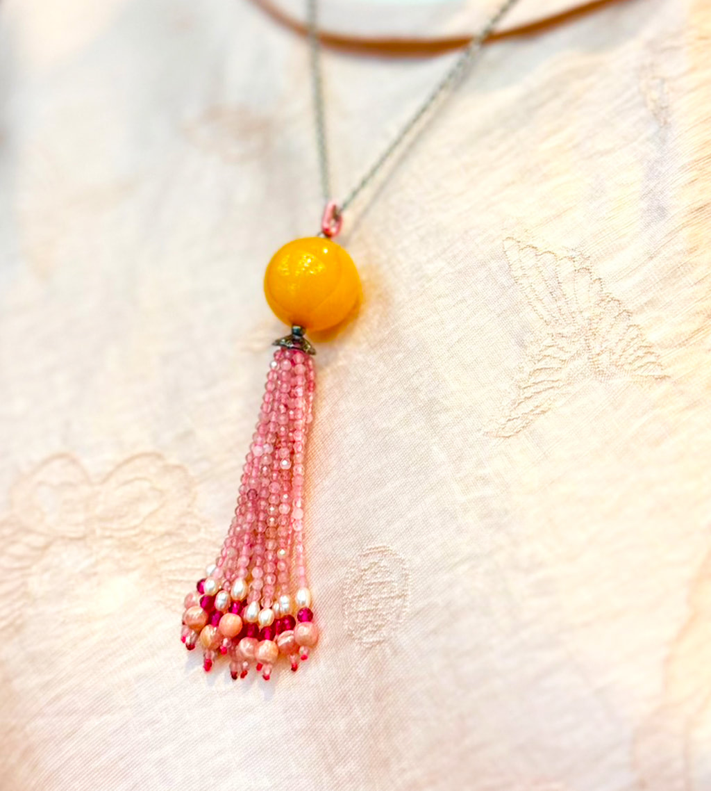
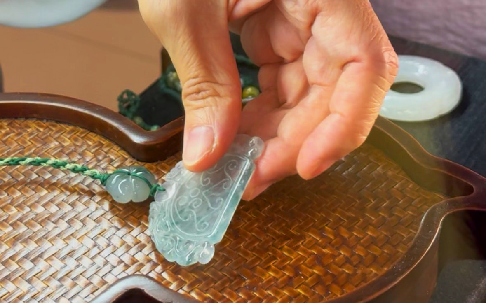
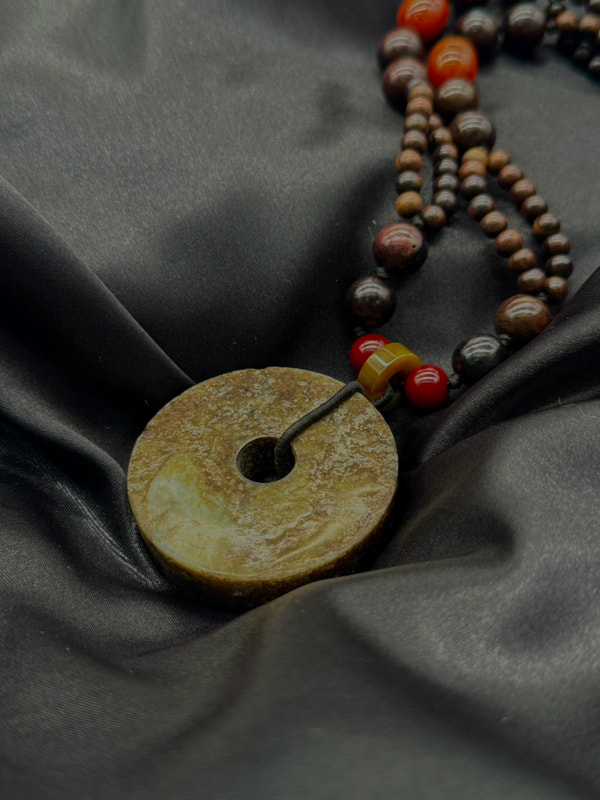
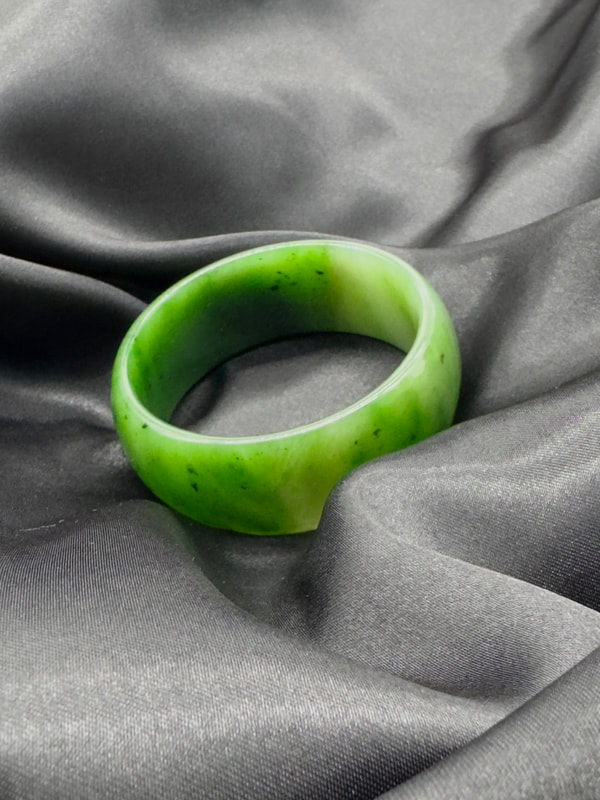
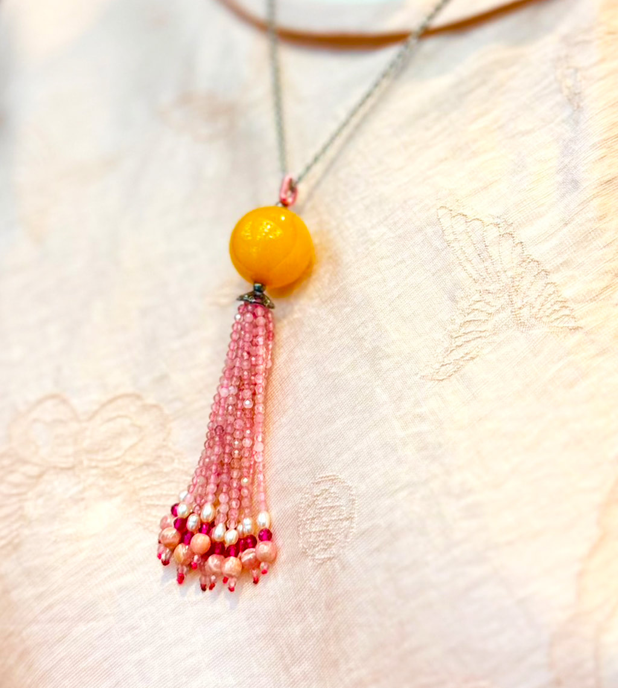
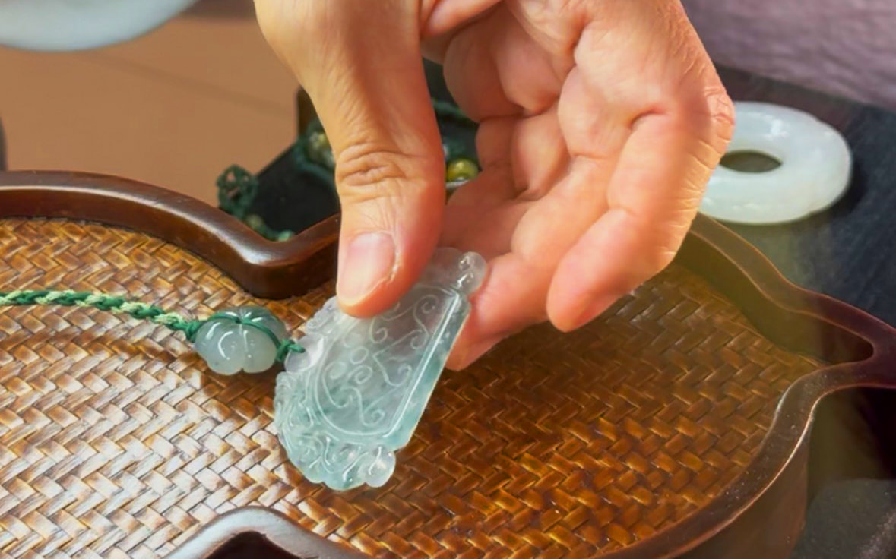
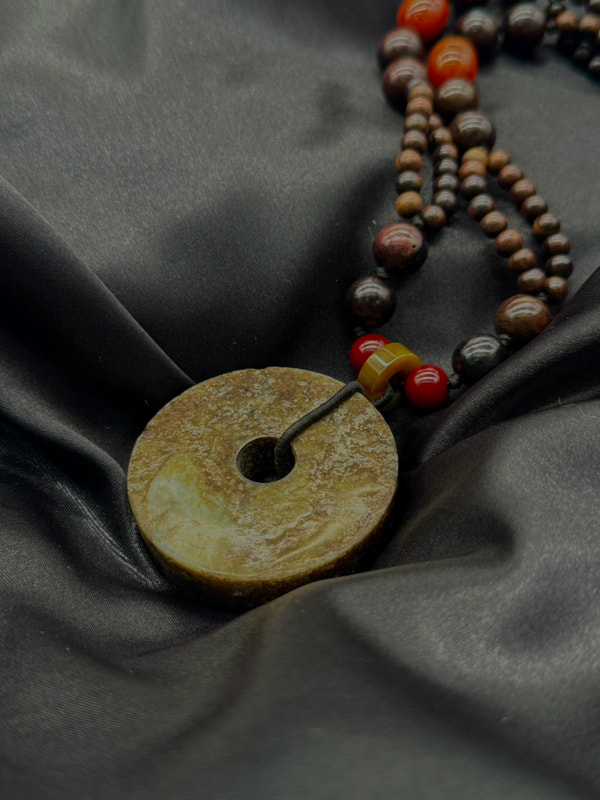
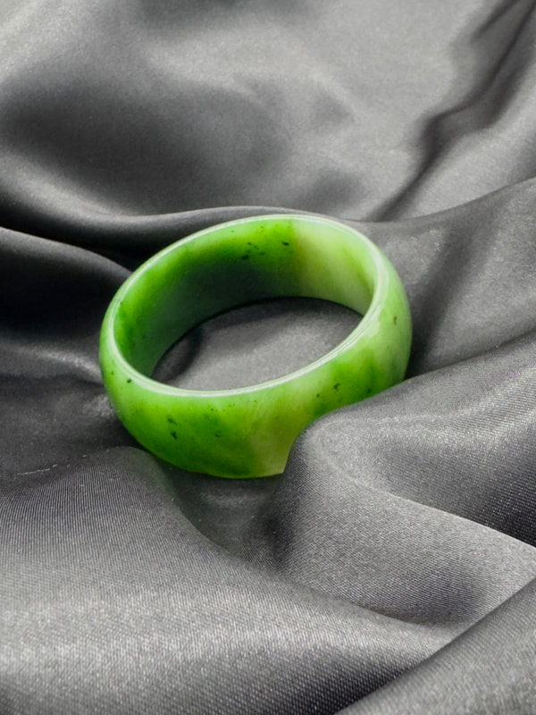
能量與美學的交織
源自自然的靈感，融合匠心工藝。澄春稻風格飾品嚴選天然珠寶與高級材料，延續春稻品牌的質樸美學，細緻打造每一件飾品。
無論是一抹溫潤的光澤，或是一絲純粹的線條設計，皆傳遞著自然與心意的和諧共鳴。佩戴的不只是飾品，更是一份貼近土地與自我的靜謐風格。
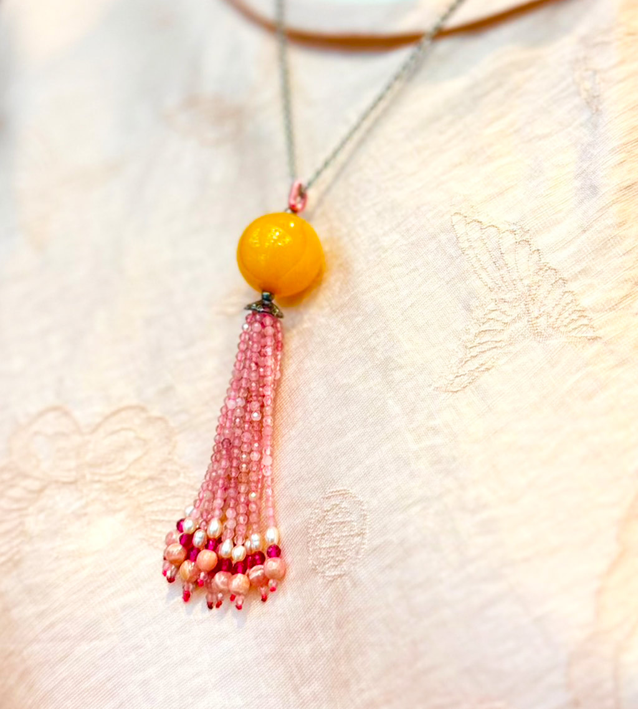
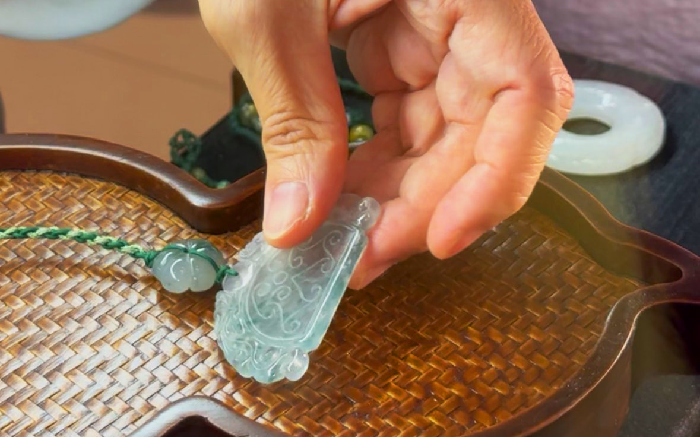
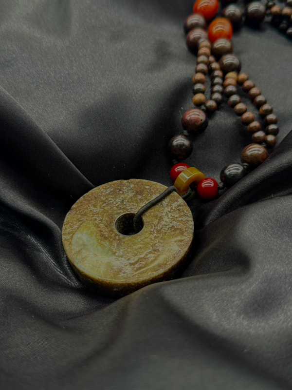
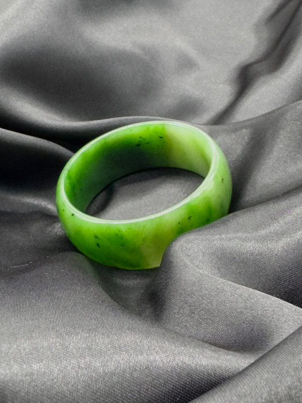